My work explores the relationship between today’s pop-culture and my cultural identity, with influences as diverse as Rafia Santana and Soni Lopez Chavez. They use new media and illustrations to express their own unique styles. With there, colorful, unique styles, I wanted to incorporate something similar and create something interactive for my audience to engage in.
I found my love for connecting my art pieces with my cultural identity in being a young Mexican American woman would make my work personal and informative to people who are not familiar with the different traditions and cultures. For this project, I used Adobe Illustration and Lens studio to create my Loteria Filter. With the filer, the user is able to interact with their camera and see the different eye filters I had placed for each card.
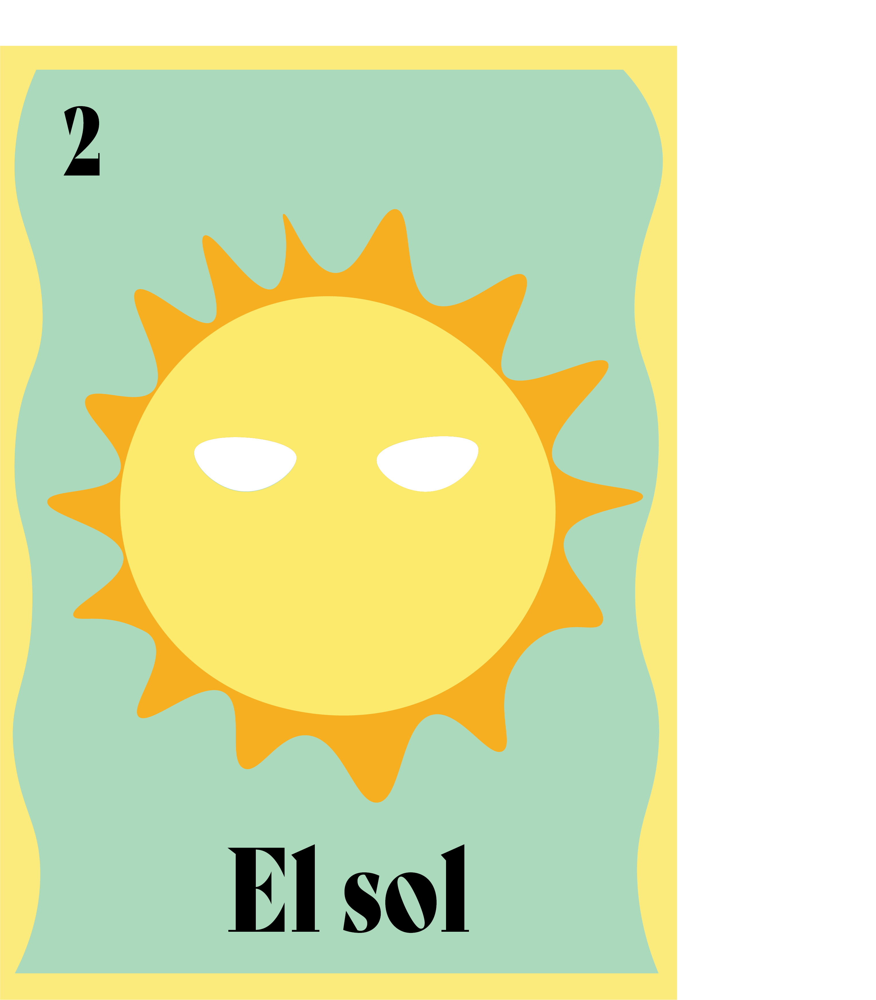
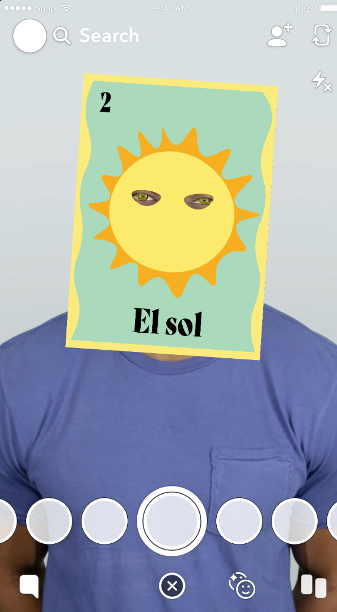
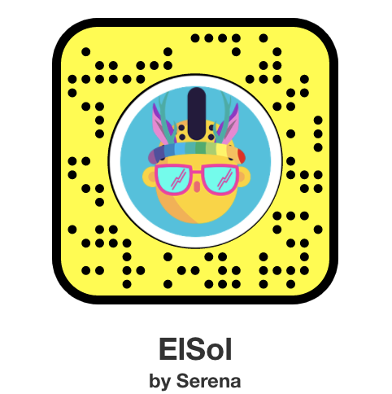
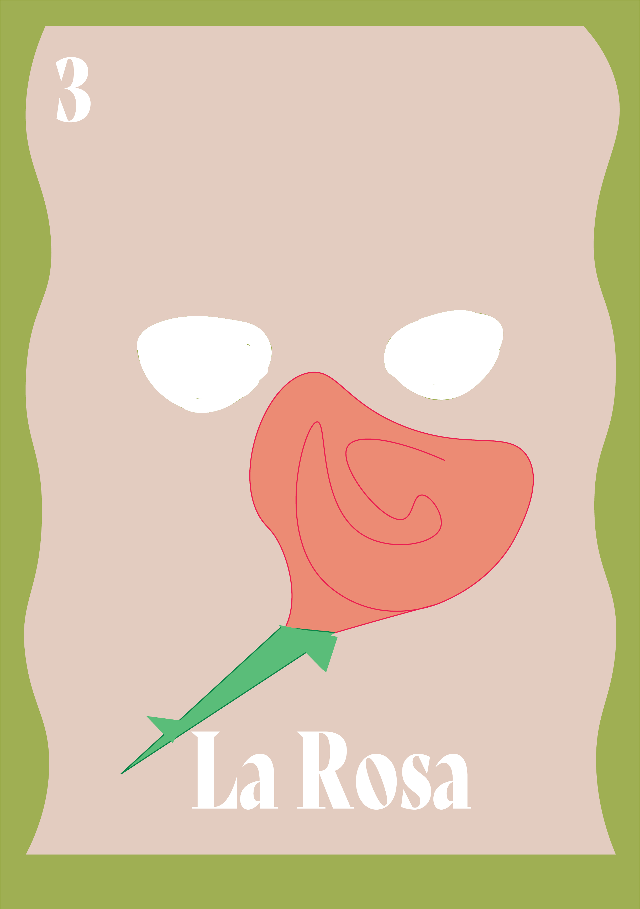
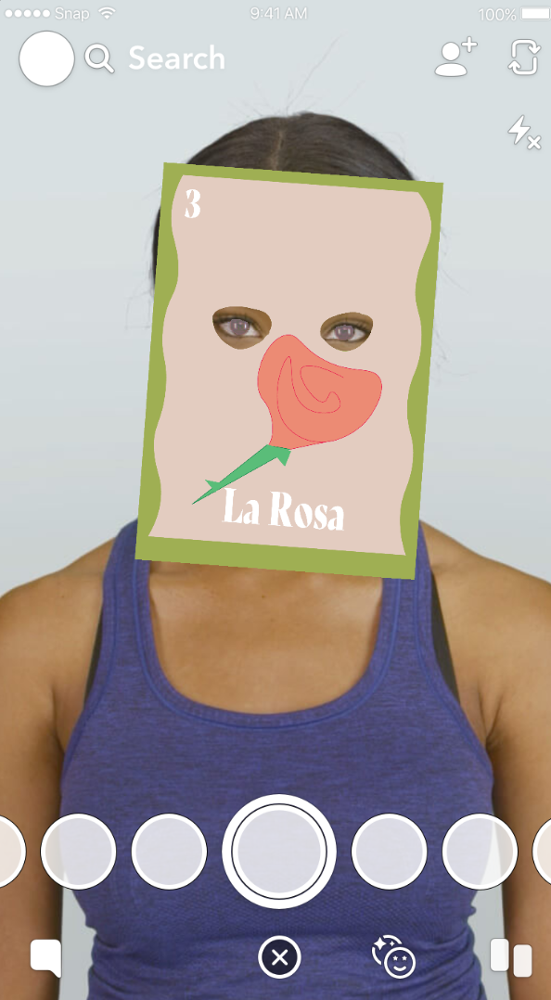

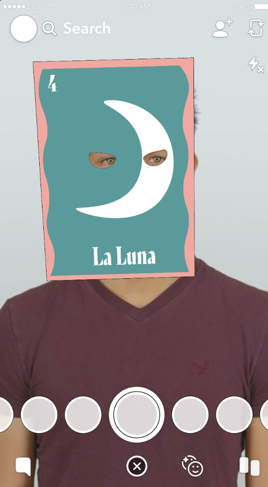

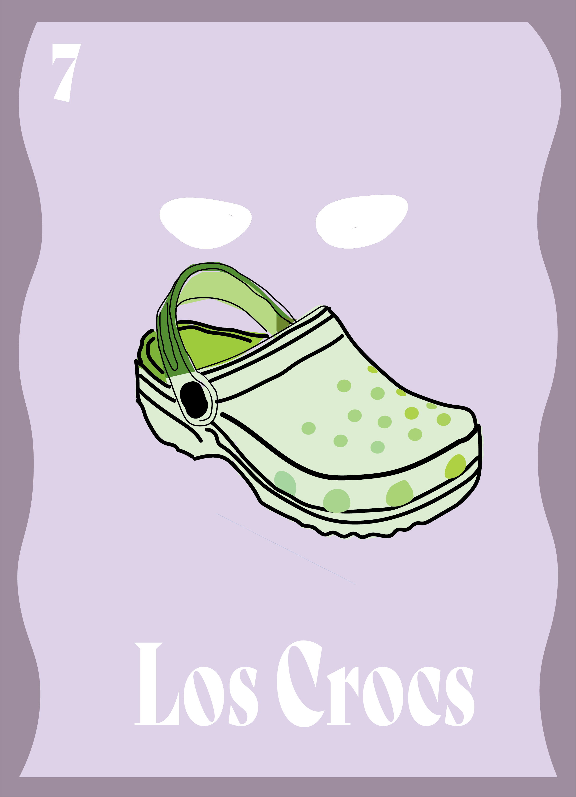
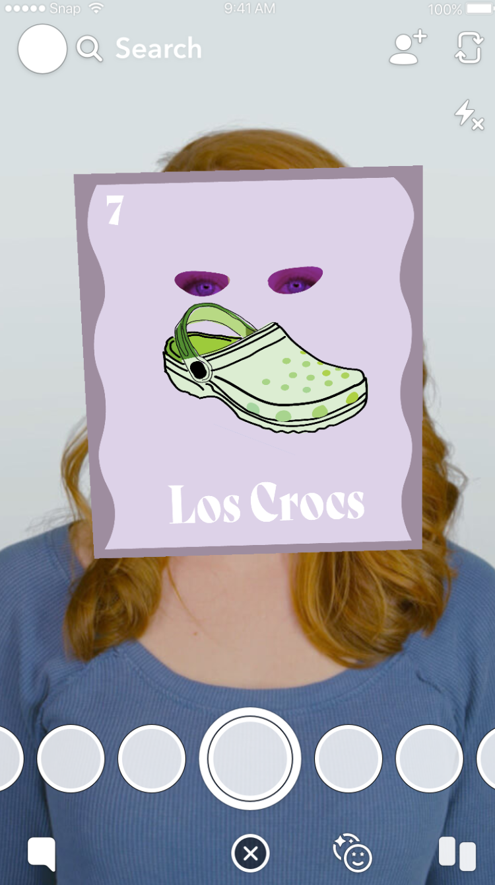
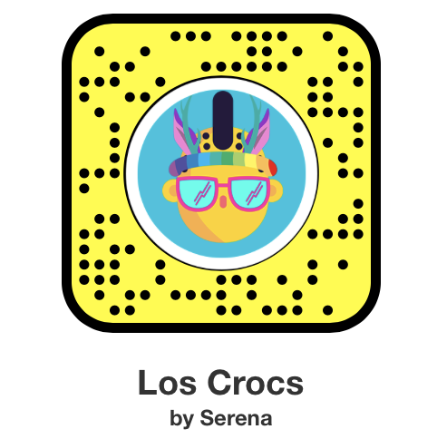

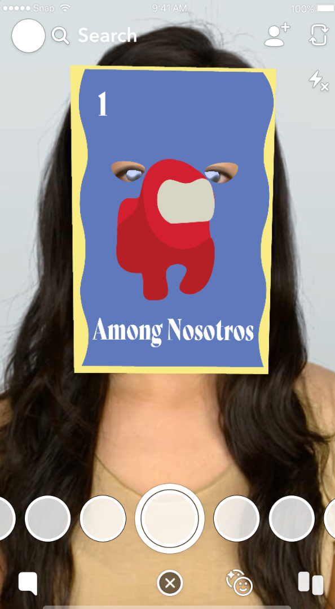
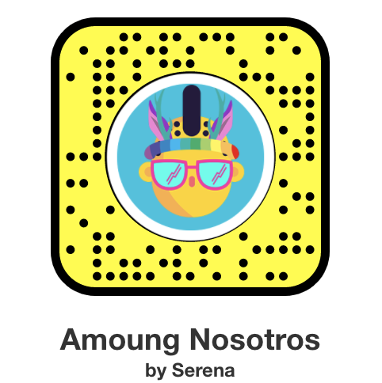
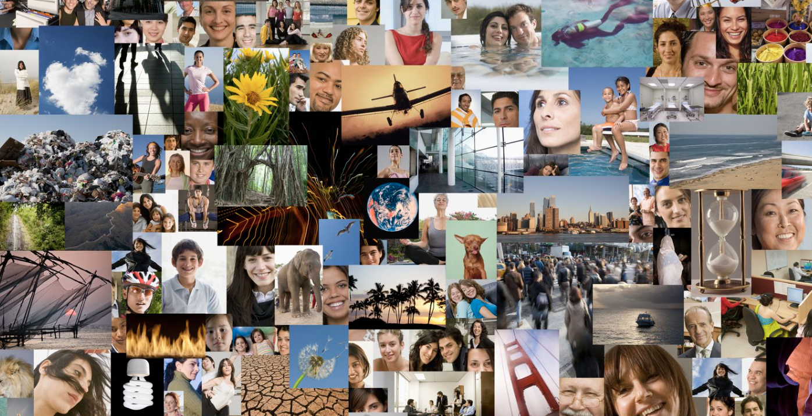
If you like to participate in a grad photo collage collection, I encourage you to share your photo with your friends and family and send in their picture to me by email @serenamunoz.sjsu.edu with your favorite filter and with a tag of the city you are from.